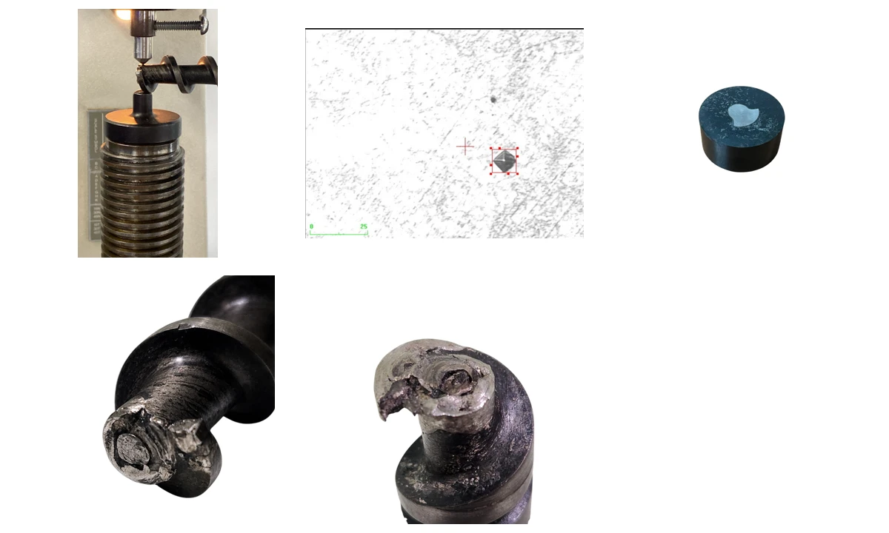
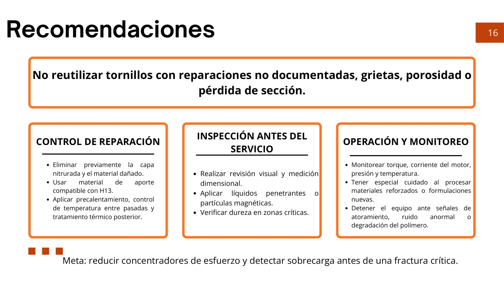

Materials, microscopy & mechanical analysis
Extruder screw failure analysis
Reconstructing a fracture from physical evidence.
A laboratory investigation combining fracture inspection, hardness, metallography, SEM, EDS and torsional calculations.
Academic team project · Tecnológico de Monterrey
Engineering decisions, evidence and lessons from the team presentation.
01 / Component & failure context
The investigated screw transports, compresses, melts and pushes polymer through a thermoplastic extrusion system. The screw/barrel diameter is 19 mm with L/D = 30; the specified screw material is quenched, ground and nitrided H13 tool steel. A change from conventional polymers to reinforced bioplastics introduced additional friction and abrasive service.


During PLA + ABS pelletizing, after approximately 500 g of processed material, an abnormal noise and polymer discoloration preceded loss of output. Purging did not restore flow, and disassembly revealed the fracture. A jam or increased torque was considered a possible final trigger.
02 / Competing hypotheses & investigation
Three initial explanations guided the investigation: a deficient earlier repair, a torsional overload, and progressive fatigue or wear. The team compared physical observations with material characterization and a simplified loading model rather than assigning the cause from appearance alone.


03 / From surface inspection to microstructure
Visual and stereoscopic inspection identified a change in color and finish, grinding marks, geometric discontinuities and local indentations. These observations supported prior intervention near the fracture. Hardness and metallography were used to distinguish the base material, hardened layer and altered region.


| Measurement | Reported value |
|---|---|
| Fragment surface | 56.24 HRC |
| Fragment core | 45.28 HRC |
| Core microhardness | 423.3 HV |
| Nitrided layer microhardness | 666 HV |
| Nitrided layer thickness | 200–290 μm |
| Grain size | ASTM 10, approximately 15 μm |
The base material showed tempered martensite consistent with treated H13 and a harder nitrided surface. These results support the base-material description but do not establish the strength of the repaired interface.

04 / SEM, chemistry & torsional loading
Scanning electron microscopy revealed an interface between substrate and an altered region, with porosity, cracks and surface damage. Some fracture features had been modified by post-fracture rubbing. EDS showed that the altered zone was chemically different from the H13-like core.

| EDS mass fraction | Core | Altered / repaired region |
|---|---|---|
| Fe | 91.88% | 61.89% |
| Cr | 5.44% | 23.32% |
| Ni | — | 5.76% |


The chemical difference supports the presence of another material at a likely repair. Similarity to E2307-16 filler was discussed as a possibility, not a definitive identification. Repair records were unavailable, so the welding procedure itself could not be established.
The simplified torsion calculation used an 11 mm critical solid diameter, 30 RPM screw speed and an estimated 248.6 W operating power at 10 Hz from a nominal 2 hp motor. It compared three assumed torque levels.
| Load case | Torque | Calculated shear stress |
|---|---|---|
| Nominal | 79.1 N·m | 303 MPa |
| 1.5 × nominal | 118.7 N·m | 454 MPa |
| 2 × nominal | 158.2 N·m | 605 MPa |

Even the highest modeled value stayed below the assumed 650 MPa shear limit for sound material. This does not rule out local overload: the calculation omits the repaired interface, defects and local stress concentrations. It indicates that nominal torsion of an intact shaft alone was an incomplete explanation.
05 / Probable cause & prevention
The combined evidence points to localized torsional overload in a weakened, previously repaired region. Changed service conditions and a final jam could have contributed to failure. Fatigue crack growth could not be confirmed because the original fracture surface was damaged.


The repair review emphasized a documented, qualified process and inspection before returning a screw to service. The presentation discusses welding references; it does not demonstrate certification or establish how the earlier repair was performed.


- Avoid returning screws with undocumented repairs, cracks, porosity or loss of section to service.
- Inspect dimensions, surface condition, hardness and potential cracks after a qualified repair.
- Monitor torque or motor current and temperature; stop and investigate abnormal noise, flow loss or a jam.
Academic team investigation at Tecnológico de Monterrey. The case study presents the team’s analysis and preserves the distinction between observations, modeled loads and probable causes.